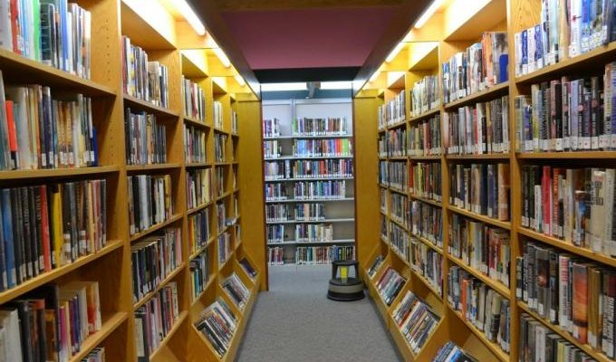

Fasilitas Lengkap Sekolah Kami
Fasilitas yang lengkap akan mendukung proses perkembangan para siswa-siswi SMAN 82 Jakarta

Perpustakaan Sekolah Terlengkap

Jl.Pahlawan No 57, Sukaluyu, Kec. Cibeunying Kaler, Kota Bandung, Jawa Barat 40123
Kunjungi Kami Lebih LanjutDirancang oleh Prof. Dr. Ramadhan Gilang, S.Pd
Terwujudnya peserta didik yang beriman dan bertaqwa, cerdas, terampil, dan berwawasan global serta ikut serta dalam mengisi kegiatan kemerdekaan Negara Kesatuan Republik Indonesia
Meningkatkan keimanan dan ketaqwaan kepada Tuhan Yang Maha Esa, Membentuk kepribadian yang kokoh dan berbudi pekerti luhur. Menyelenggarakan pendidikan yang efektif untuk meningkatkan prestasi akademik peserta didik dalam menghadapi persaingan lokal, nasional, dan global. Membina kemandirian peserta didik melalui pendidikan kewirausahaan dan pengembangan diri yang terencana dan berkesinambungan.
Untuk mewujudkan Visi, Misi, dan Tujuan Sekolah, Strategi yang akan ditempuh yaitu : Penyusunan Rencana Strategi (Restra) Sekolah yang diawali dengan indentifikasi persoalan dan Analisis SWOT dan dijabarkan dengan penyusunan: Rencana Jangka Panjang 8 ( delapan ) tahun Rencana Empat Tahunan Rencana Tahunan yang dilengkapi dengan RAPBS dan RASK. Program Khusus baik yang menyangkut pengadaan ataupun peningkatan mutu pendidikan,
Gedung Sekolah Kami Sangat Besar dan Nyaman apabila digunakan dengan baik dengan keluarga 63
Fasilitas yang lengkap akan mendukung proses perkembangan para siswa-siswi SMAN 82 Jakarta
Tiap Tahunnya Kami meluluskan siswa-siswi berprestasi
Saat saya bersekolah disni selama 3 tahun pada masa SMP saya sangat merasa senang dan nyaman, karena lingkungan belajar yang sangat mendukung para siswa-siswi untuk berprestasi dibidang akademik ataupun non-akademik
Seneng Banget pas sekolah disini, fasilitas nya lengkap banget dan sangat cocok untuk siswa-siswi yang bener bener ambis mau ngejar SMA impian
Kalo udah masuk sini dijamin seneng terus bakal jadi orang sukses, soalnya kalo udah lulus dari sini pasti punya banyak temen soalnya siswa nya aja ada 400 orang per-angkatan